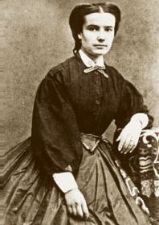

BIOGRAFIA
Machado de Assis foi um dos maiores escritores do Brasil, sendo percursor do realismo brasileiro e fundador da Academia Brasileira de Letras.
[foto]
Machado de Assis (Joaquim Maria Machado de Assis) é um dos maiores escritores da língua portuguesa de todos os tempos. Considerado o pai do realismo brasileiro, cujo marco inicial é seu romance Memórias póstumas de Brás Cubas (1881), o autor tem importância fundamental na constituição da literatura brasileira.
Biografia Nasceu em 21 de junho de 1839, no Morro do Livramento, região marginalizada do Rio de Janeiro. Pobre, descendente de escravos, gago e epilético, saiu de casa aos 16 anos, quando começou a trabalhar em jornais na capital carioca como aprendiz de tipógrafo.
No emprego, conheceu Manuel Antônio de Almeida, autor de Memórias de um Sargento de Milícias. Essa parceria profissional foi de grande influência para Machado que, desde então, continuou trabalhando para jornais de diversas formas, onde teve a oportunidade de escrever crônicas, que se iniciaram em forma de resenhas sobre os debates do Senado e, posteriormente, a respeito dos costumes da época, o que gerou, ao longo de uma carreira de 40 anos, mais de 600 textos sobre a sociedade carioca do século XIX.
Em 1897, Machado fundou a Academia Brasileira de Letras, onde ocupou o posto de presidente por 10 anos. Para além da carreira letrada, Machado de Assis também ocupou diversos cargos públicos, tornando-se uma proeminente figura de sua época.
Carolina, o grande amor [foto] Carolina Augusta Xavier de Novais, esposa de Machado de Assis.Em 1866, chegou ao Rio de Janeiro Carolina Augusta Xavier de Novais, irmã do poeta português Faustino Xavier de Novais, grande amigo de Machado. Os dois conheceram-se e passaram a se aproximar até que, três anos depois, em 12 de novembro de 1869, casaram-se. O casal permaneceu apaixonado – como apontam as correspondências do casal – e unido por 35 anos até que, em 1904, Carolina faleceu. Machado, na ocasião, entrou em profunda depressão. O autor, saudoso de sua esposa, escreveu um dos seus mais famosos poemas:
A Carolina
Querida! Ao pé do leito derradeiro,
em que descansas desta longa vida,
aqui venho e virei, pobre querida,
trazer-te o coração de companheiro.
Pulsa-lhe aquele afeto verdadeiro
que, a despeito de toda a humana lida,
fez a nossa existência apetecida
e num recanto pôs um mundo inteiro...
Trago-te flores - restos arrancados
da terra que nos viu passar unidos
e ora mortos nos deixa e separados;
que eu, se tenho, nos olhos mal feridos,
pensamentos de vida formulados,
são pensamentos idos e vividos.
Morte
Já idoso e tomado pela depressão, Machado de Assis falece no dia 29 de setembro de 1908, aos 69 anos de idade. Sua morte foi amplamente lamentada por diversos artistas e intelectuais brasileiros, dentre os quais o jurista Rui Barbosa, que discursou no velório do autor, representando a Academia Brasileira de Letras.
[vídeo - https://www.youtube.com/watch?v=ycGtRZrs3Y0]